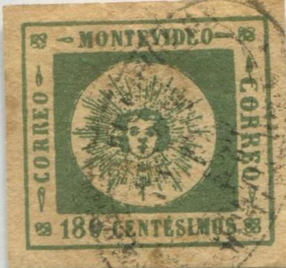
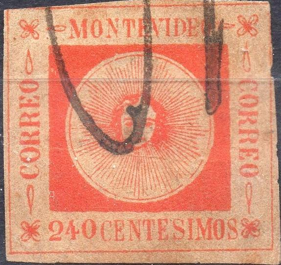
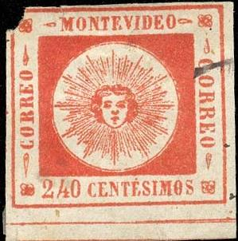

Return To Catalogue - Uruguay 1859-60 'Sun' issue - Uruguay 1859-60 'Sun' issue, forgeries by Fournier - Uruguay 1859-60 'Sun' issue, forgeries by Sperati
Note: on my website many of the
pictures can not be seen! They are of course present in the
catalogue;
contact me if you want to purchase it.


All the above stamps are genuine!
(by the way, I'm not sure if all the above stamps are genuine), examples:

Forgery with different lettering, for example the 'C' of the left
Correos or the last 'S' of 'CENTESIMOS'.
I've been told that this is a forgery, I have no further
information

Most likely forgery A of Hoffmann's book of the 180 c thin
numerals. The ornament to the left of 'MONTEVIDEO' is broken in
the genuine 180 c thin numerals, here it is complete.


Forgeries with no accent on the second 'E' of 'CENTESIMOS'. Last
images reduced size. Note that in the cancel the word 'URUG' has
been replaced by 'BRUG'. Also note the forgeries with '06
CENTESIMOS' with bogus numeral cancel '1602', 'CORREOS 7.1.6?
II-III', 'EN DE CORREOS ARREGONDO REP-O-DEL-BRUG.' (capital
letters, click here for more information
about this cancel), 'Arregondo', etc.



Another set with no accent on 'CENTESIMOS'. The ornaments in the
corners are different from the genuine stamps. They exist with
different bogus cancels, such as 'PP', 'PF' cancels, 'APRES LE
DEPART', manuscript cancels etc.

I've been told that these are bogus cancels, it is the same
cancel that appears on one of the above forgeries.


Forgery type A of the 180 c thick numeral type of the Hoffmann
book. The left 'CORREO' is all blurred.


Hoffmann type A forgery of the 100 c thin numerals; there is no
break below the lower left ornament in the frameline (in the
genuine there is).

This might be forgery B of Hoffmann's book of the 100 c thin
numerals. Again there is no break below the lower left ornament
in the frameline (in the genuine there is). Also the cancel is
'too neat'.


Three forgeries with bogus cancels, one of them has a 'VF' cancel. This is forgery F of
Hoffmann's book of the 60 c with thick numerals. The others also
have bogus cancels (a Papal States cancel and a Spanish spider
cancel).


Primitive forgeries of the 80 c with 'MONTEVIDEO' not high
enough. It has bogus cancels and is described in Hoffmann's book
as forgery E. Probably made by the same forger as the above 60 c
stamps. Also one with a 'VF' cancel
Probably forgery B of the 80 c in Hoffmann's book.


Possibly forgery H of Hoffmann's book of the 60 c thick numerals.
The accent on the second 'E' of 'CENTESIMOS' is different. The
'C' of the left and right 'CORREO' is also taller. The PAYSANDÚ
cancel appears different from a genuine cancel.

This might be forgery A of Hoffmann's book of the 240 c value. It
is very deceptive.


This is forgery B of the Hoffmann book. The 'E' of the right
'CORREO' has a curved bottom and a curved top. It is rather
deceptive.


This is forgery A of the 80 c thin numerals as listed in the
Hoffmann book. It is photolithographed, but slightly blur. It
almost always has a tiny dot between the 'tear' ornament and the
'C' of 'CORREO' on the right hand side. It was printed in
sheetlets of 4 stamps (2x2).

Primitive forgery of the 60 c value. Not listed in Hoffmann's
book.

Other forgery of the 80 c value. A similar forgery of the 180 c
thick letters is shown in the Hoffmann book (forgery H).


Note the strangely formed corner ornaments in these forgeries.


Oneglia forgeries with a bars with "G" cancel as often
used by Oneglia.

Very primitive forgery

A "0" Centesimos stamp....

A 120 c black on blue, possibly a Zechmeyer
product.
Uruguay 1859-60 'Sun'
issue, forgeries by Fournier
Uruguay 1859-60 'Sun' issue, forgeries by
Sperati
More on forgeries can be found on http://www.geocities.com/claghorn1p/Uruguay/index.htm (Bill Claghorn's site).
{kind=link}
{kind=link}
{kind=link}